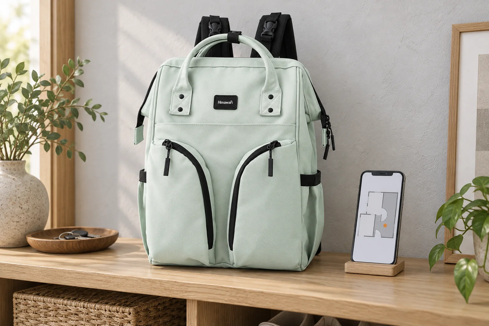
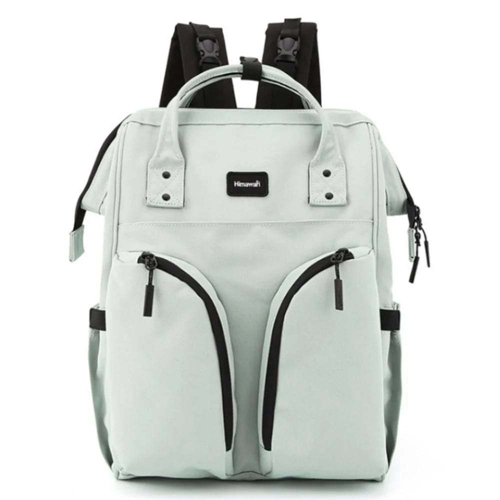

휴대전화를 찾느라 백팩을 매번 내려놓는다면

지도 한 번을 보려고 백팩을 내리고 지퍼를 열고 다시 메는 일이 이어집니다. 휴대전화가 가방 안에 잘 들어가 있다는 것과 자주 꺼내기 편한 자리에 있다는 것은 다른 조건입니다. 화면을 확인하는 횟수가 많은 날에는 작은 물건 하나 때문에 백팩 전체를 움직이는 일이 더 크게 느껴집니다. 새 가방을 고르거나 지금 가방의 배치를 바꿀 때 그 반복 동작을 먼저 살펴볼 수 있습니다.
포켓 개수는 이 질문에 바로 답하지 않습니다. 깊은 포켓은 물건이 아래로 내려가 손가락으로 찾기 어려울 수 있고, 얕은 공간은 휴대전화와 케이스를 넣고 닫을 수 있는지 봐야 합니다. 몸 가까운 위치도 입구 방향에 따라 접근이 다릅니다. 자주 꺼내는 물건을 무조건 바깥으로 보내기보다 자신의 이동 환경과 가방을 다루는 방식을 함께 두고 자리를 고릅니다.

바깥에서 보이는 여밈과 실제 포켓
Himawari No.1208 민트의 실제 제품 사진에는 앞쪽을 따라 곡선으로 놓인 검정 여밈 선이 보입니다. 위쪽에는 손잡이가 있고 몸체의 여러 면이 구분되어 있습니다. 사진에서 보이는 선만으로 각 포켓의 깊이나 내부 연결을 확정할 수는 없습니다. 눈에 띄는 입구가 있다고 자신의 휴대전화를 거기에 넣기 좋다고 정하기 전에, 실제로 어느 공간이 열리고 어떤 방향으로 닫히는지 설명에서 확인합니다.
이 모델의 외부 크기는 가로 29 × 세로 40 × 폭 17cm입니다. 휴대전화의 자리를 고르는 데 이 전체 숫자를 그대로 포켓 크기로 쓰지는 않습니다. 가방 전체가 넉넉해도 작은 칸의 입구는 다를 수 있습니다. 휴대전화 케이스와 연결된 손목끈을 평소대로 둔 모습이 필요한 비교 대상입니다. 몸체만 들어가고 부속이 여밈 사이에 남는다면 이전에 생각한 보관 상태와 달라집니다.
사용 가능한 칸을 알았다면 가방을 내려놓은 상태에서 휴대전화를 넣고 정상적으로 닫아봅니다. 다시 꺼낼 때 어느 부분을 잡게 되는지, 손이 들어갈 여유가 있는지를 살펴봅니다. 칸의 입구가 넓어도 물건이 바닥까지 내려가면 꺼낼 때 손을 더 깊이 넣어야 합니다. 포켓의 가로와 세로에 더해 실제 물건이 머무는 위치가 필요한 이유입니다. 다른 소지품을 함께 넣는다면 그 위치도 달라질 수 있습니다.
손이 닿는 방향은 가방 위치와 함께 바뀐다
등에 멘 채로 손을 뻗는 것과 몸 앞으로 옮겨 여는 것은 다른 자세입니다. 손끝이 닿는다는 이유만으로 보이지 않는 입구를 급하게 조작하기보다 잠시 멈춰 가방을 볼 수 있는 위치로 옮길 수 있습니다. 그 위치에서 휴대전화를 꺼내고 나머지 물건을 닫아두는 동작이 이어지는지 봅니다. 주로 멈추는 장소에서 가능한 자세를 골라 같은 동작을 반복해봅니다.
가방을 의자나 벤치에 내리는 편이 익숙하다면 그 방법도 비교 기준이 됩니다. 대신 매번 둘 자리가 있는지, 한 손에 다른 짐을 든 날에도 같은 흐름이 가능한지 생각합니다. 가방을 내려놓고 여는 흐름이 익숙하다면 그 방법을 유지하면서 안쪽의 위치부터 바꿔볼 수 있습니다. 자신이 번거롭게 느끼는 부분이 가방을 벗는 일인지, 안에서 물건을 찾는 일인지 나누어야 포켓 위치를 바꿀지 가방 구조를 바꿀지 정할 수 있습니다.
예를 들어 메인 공간의 작은 파우치 안에 휴대전화를 넣었다면 두 여밈을 열어야 할 수 있습니다. 파우치를 따로 꺼내 쓰는 사람에게는 편한 묶음이지만 이동 중 화면을 여러 번 보는 사람에게는 동작이 늘어날 수 있습니다. 바깥 칸으로 옮기면 그 동작은 달라질 수 있으나 포켓의 닫힘과 관리 방식까지 함께 봅니다. 여는 횟수를 줄이는 이유와 물건을 보관하는 조건을 동시에 만족할 자리를 고르는 것입니다.
꺼내는 만큼 다시 넣는 동작도 필요하다
휴대전화를 한 번에 꺼냈어도 사용 뒤 다른 칸에 임시로 넣으면 다음에는 다시 찾아야 합니다. 자주 쓰는 자리를 정할 때에는 같은 위치로 되돌려 정상적으로 닫는 동작까지 이어봅니다. 케이스의 모서리가 입구에 걸리거나 손목끈이 밖으로 남는다면 방향을 바꿔 비교할 수 있습니다. 가방 안에서 기기를 돌려야만 닫히는지, 사용한 방향 그대로 들어가는지에 따라 익숙해질 동작도 달라집니다.
한 포켓에 열쇠와 영수증까지 계속 넣으면 처음에는 잘 꺼내던 휴대전화의 위치가 바뀔 수 있습니다. 새로운 물건을 넣은 뒤 이전 자리가 유지되는지 살펴봅니다. 모든 작은 소지품을 각각 다른 칸으로 나눌 필요는 없지만, 휴대전화를 꺼낼 때 다른 물건을 매번 같이 집게 된다면 묶음을 바꿀 이유가 있습니다. 포켓이 비어 있을 때 내린 판단을 실제 사용하는 상태에서 다시 보는 과정입니다.
휴대전화를 오래 쓰는 장소에서는 백팩 안으로 계속 되돌리는 것보다 그 자리에서 쓸 기기의 위치를 정할 수도 있습니다. 사용 시간이 긴 자리에서는 기기를 곁에 두고 짐을 정리하는 방법도 비교할 수 있습니다. 걷는 동안 잠깐 확인하는 때와 앉아서 길게 사용하는 때를 구별하면 백팩에 돌아갈 시점도 달라집니다. 사용하는 장소의 보관 안내와 자기 관리 방식 안에서 필요한 접근만 남길 수 있습니다.
다음 외출에서 백팩을 내리게 되는 순간을 하나만 살펴봅니다. 입구를 못 찾아서인지, 물건이 깊이 내려가서인지, 다시 넣고 닫는 데 손이 더 필요해서인지 구체적으로 알면 됩니다. 제품 문의를 할 때도 휴대전화의 실제 크기와 보고 싶은 포켓을 함께 전할 수 있습니다. 많은 칸 중 남들이 쓰는 자리를 찾기보다, 내가 반복하는 한 동작이 줄거나 분명해지는 위치를 선택하는 편이 가방을 고를 이유로 남습니다.